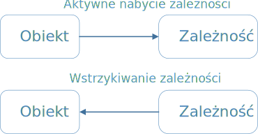

Dependency Injection#
Dependency Injection#
Wstrzykiwanie zależności (DI) jest mechanizmem oddzielenia konstrukcji obiektu od jego użytkowania. Jest realizacją techniki Inversion of Control do zarządzania zależnościami. Odwraca realizację zależności poprzez przeniesienie drugorzędnej odpowiedzialności z obiektu do innego obiektu, dedykowanego do tych zadań, przez co zapewnia się zachowanie Zasady Pojedynczej Odpowiedzialności (SRP).
W kontekście zarządzania zależnościami obiekt nie powinien być odpowiedzialny za samodzielne tworzenie zależności. Powinien przekazywać tę odpowiedzialność do innego “autorytarnego” mechanizmu, odwracając w ten sposób sterowanie (np. do kontenera IoC).
Przykład klasy z silnymi zależnościami.#
W konstruktorze klasy BusinessService definiowane są zależności od klas konkretnych. Nie ma możliwości zmiany implementacji usług wykorzystywanych przez instancję klasy bez zmiany implementacji konstruktora. Naruszona jest Zasada Otwarte/Zamknięte (OCP) oraz Zasada Pojedynczej Odpowiedzialności (SRP), ponieważ instancja BusinessService poza swoją podstawową odpowiedzialnością związaną z logiką biznesową, hermetyzuje również odpowiedzialność związaną z zarządzaniem zależnościami.
class BusinessService
{
private:
std::unique_ptr<DataAccessComponent> data_access_component_;
std::shared_ptr<WebService> service_;
std::unique_ptr<Logger> logger_;
public:
BusinessService()
{
data_access_component_ = std::make_unique<DataAccessComponent>(AppManager::connection_string());
service_ = get_service_proxy("https://infotraining.pl/service");
auto logging_data_sink = std::make_unique<LoggingDataSink>();
logger_ = std::make_unique<FileLogger>("log.dat", logging_data_sink);
}
double get_price_by_id(int id)
{
// implementacja wykorzystująca obiekty zależne
}
};
Klasa BusinessService jest też słabo testowalna, ponieważ zależności są zdefiniowane statycznie i nie mamy możliwości podstawienia w ich miejsce obiektów pozorujących w celu odizolowania serwisu od bazy danych, web-service’u i komponentów logowania.
Wzorzec wstrzykiwania zależności stanowi alternatywny sposób organizowania kodu w celu uniknięcia ścisłego powiązania BusinessService z klasami zależnymi.
class BusinessService
{
private:
std::unique_ptr<DataAccessComponent> data_access_component_;
std::shared_ptr<WebService> service_;
std::unique_ptr<Logger> logger_;
public:
BusinessService(std::unique_ptr<DataAccessComponent> dac, std::shared_ptr<WebService> service, std::unique_ptr<Logger> logger)
: data_access_component_{std::move(dac)}, service_{service}, logger_{std::move(logger)}
{
}
double get_price_by_id(int id)
{
// implementacja wykorzystująca obiekty zależne
}
};
Po implementacji techniki DI klasa BusinessService spełnia zasady OCP i SRP oraz jest w pełni testowalna.